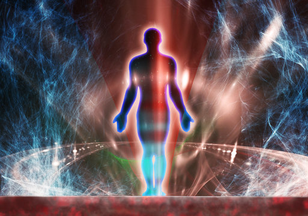
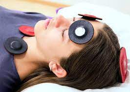

El biomagnetismo es una terapia alternativa que utiliza imanes de baja intensidad para equilibrar el pH del cuerpo y combatir patógenos como virus, bacterias y parásitos. Se basa en la teoría de que desequilibrios en el pH corporal pueden ser la causa de diversas enfermedades, y mediante la aplicación estratégica de imanes en puntos específicos del cuerpo, se busca restaurar este equilibrio y promover la salud. Esta práctica busca identificar y corregir disfunciones energéticas en el organismo para mejorar el bienestar general.
Este primera clase del curso de biomagnetismo aborda temas clave como la importancia de conocer su historia, destacando pioneros modernos como Richard Broeringmeyer y Mary Broeringmeyer. Se enfatiza la labor del Dr. Isaac Goiz Duran en el desarrollo del biomagnetismo médico.
Se discute también cómo el biomagnetismo puede identificar emociones pero no eliminarlas directamente, sugiriendo el cambio hacia emociones positivas para mejorar la salud.
En la segunda clase del curso de biomagnetismo, se destaca la importancia del sistema nervioso periférico para expresar sensaciones. Se explican las funciones de las neuronas y se diferencia entre cerebro y mente. Se enfatiza la necesidad de educar a los pacientes sobre su enfermedad para facilitar cambios positivos. Además, se menciona la posibilidad de que algunos terapeutas abandonen la terapia y se señala el objetivo de llegar al estado mental inconsciente para identificar desequilibrios y corregirlos.
En la tercera clase del curso de biomagnetismo, trata el papel de los campos magnéticos en el cuerpo humano y cómo interactúan con el sistema nervioso y otros sistemas biológicos. Se podrían discutir los fundamentos de la aplicación de imanes en la terapia biomagnética y cómo se utilizan para equilibrar el pH del cuerpo y promover la salud. Además, se podría abordar la importancia de la ubicación precisa de los imanes en el cuerpo para lograr resultados óptimos y cómo se realiza un diagnóstico adecuado mediante el rastreo biomagnético.
Somos una red de terapeutas comprometidos con la difusión del conocimiento en terapias alternativas. Nuestro objetivo es compartir las enseñanzas y prácticas que promueven el bienestar y la salud holística. Trabajamos para expandir la conciencia sobre diversas terapias alternativas, ofreciendo información y capacitación para que más personas puedan beneficiarse de enfoques naturales para el cuidado de la salud.
En las terapias de biomagnetismo, utilizamos imanes de baja intensidad para equilibrar el pH del cuerpo y combatir patógenos. Nuestro enfoque se centra en identificar y corregir desequilibrios energéticos en el organismo, que pueden ser la causa de diversas enfermedades. Aplicamos estratégicamente los imanes en puntos específicos del cuerpo, siguiendo un protocolo de diagnóstico llamado rastreo biomagnético. Este proceso nos permite detectar áreas de disfunción y aplicar los imanes de manera precisa para restaurar el equilibrio energético y promover la salud general del paciente.